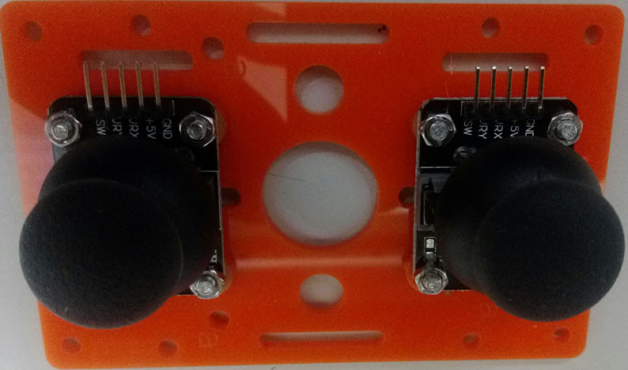
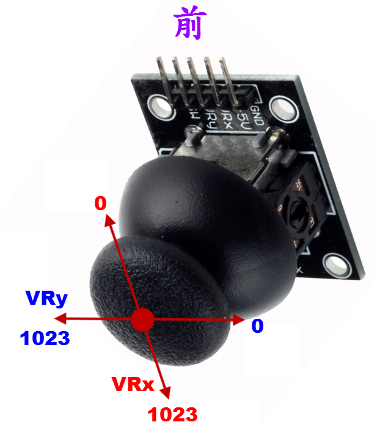
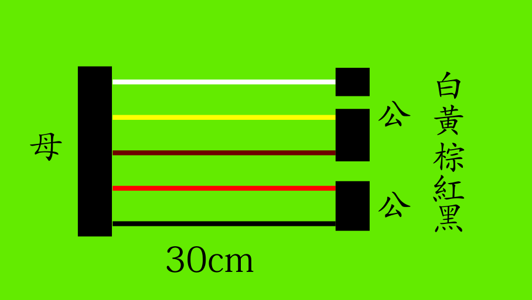
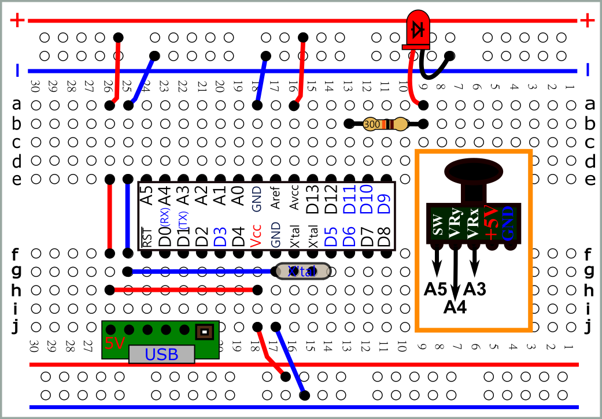
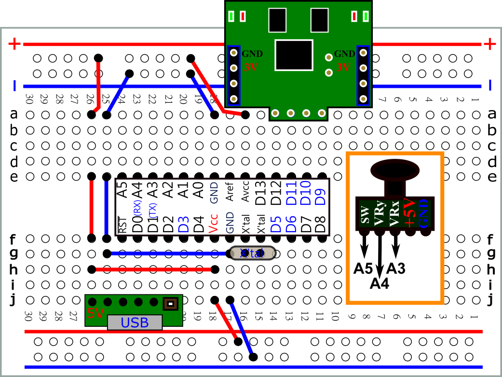
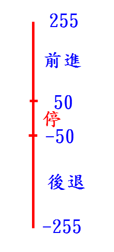
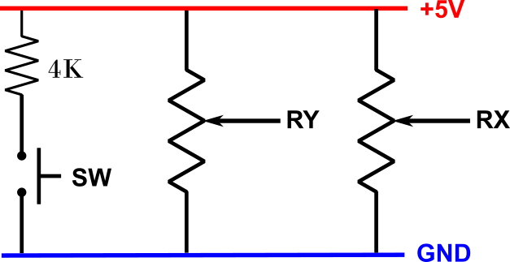

#define led 11
int xL;
void setup(){
}
void loop(){
xL=analogRead(VRxL);
xL=map(xL,0,1023,0,255);
analogWrite(led,xL);
delay(100);
}

 |
 |
 svg |
| 數位開關 數位輸入 可變電阻 類比輸入 |
 pdf svg |
| #define VRxL A3 int xL; void setup(){ Serial.begin(9600); } void loop(){ xL=analogRead(VRxL); Serial.println(xL); delay(100); } |
| #define VRxL A3 #define led 11 int xL; void setup(){ } void loop(){ xL=analogRead(VRxL); xL=map(xL,0,1023,0,255); analogWrite(led,xL); delay(100); } |
 pdf svg |
| #define VRxL A3 int xL; void setup(){ Serial.begin(9600); } void loop(){ xL=analogRead(VRxL); xL=map(xL,0,1023,255,-255); Serial.println(xL); delay(100); } |
 pdf svg |
| #define VRxL A3 #define DirL 11 #define PwmL 9 int xL; void setup(){ pinMode(DirL,OUTPUT); digitalWrite(DirL,HIGH); analogWrite(PwmL,0); } void loop(){ xL=analogRead(VRxL); xL=map(xL,0,1023,255,-255); if (xL>50) //前進 { digitalWrite(DirL,HIGH); analogWrite(PwmL,xL); } else if (xL<-50) //後退 { digitalWrite(DirL,LOW); analogWrite(PwmL,-xL); } else //停 analogWrite(PwmL,0); delay(100); } |
 |
 |
| #define VRxL A3 #define DirL 11 #define PwmL 9 #define VRxR A0 #define DirR 12 #define PwmR 10 int xL; int xR; void setup(){ pinMode(DirL,OUTPUT); pinMode(DirR,OUTPUT); digitalWrite(DirL,HIGH); digitalWrite(DirR,HIGH); analogWrite(PwmL,0); analogWrite(PwmR,0); } void loop(){ xL=analogRead(VRxL); xL=map(xL,0,1023,255,-255); if (xL>50) { digitalWrite(DirL,HIGH); analogWrite(PwmL,xL); } else if (xL<-50) { digitalWrite(DirL,LOW); analogWrite(PwmL,-xL); } else analogWrite(PwmL,0); xR=analogRead(VRxR); xR=map(xR,0,1023,255,-255); if (xR>50) { digitalWrite(DirR,HIGH); analogWrite(PwmR,xR); } else if (xR<-50) { digitalWrite(DirR,LOW); analogWrite(PwmR,-xR); } else analogWrite(PwmR,0); delay(100); } |
 pdf svg |